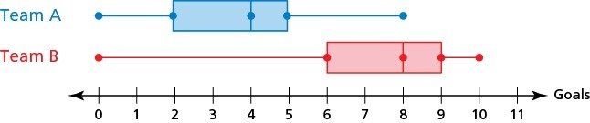

Portland Community College serves nearly 73,000 full-time and part-time students in the greater Portland area at four main campuses (SE, Cascade, Sylvania, and RC). Student Affairs would like to know how students get to campus. They randomly select 250 students from each of the four main campus and ask them how they got to classes on campus. The following are the results of their survey:
Public Transportation: 435
Driving: 475
Biking: 65
Walking: 30
Identify the population and state its size.
Identify the sample and state its size.
What sampling method was used?
What type of data was collected?
Give the statistic for the percentage of students who use public transportation.
2.
CNN conducted a survey of 500 American adults. 62% of those surveyed answered yes to the question, “Do you favor a law to ban the sale of assault weapons and semiautomatic rifles?” The reported margin of error was \(\pm 4\%\text{.}\)
What population is being studied?
What is the sample?
What type of data is this?
Is the 62% reported in the problem an example of a statistic or a parameter?
What is the confidence interval? Is the confidence interval about the statistic or the parameter?
Explain what the confidence interval tells you.
3.
A survey of 265 PCC students found that 23%, plus or minus 4% prefer to study at the library.
What population is being studied?
What type of data was collected?
Is the reported 23% a statistic or a parameter?
What is the margin of error?
What is the confidence interval?
Explain what the confidence interval tells you.
4.
Identify the sampling method. Just the name will suffice.
Researchers select every 5th customer who walks into the store to take a survey.
Raffle tickets are distributed and collected in a bag, where they are mixed and ten are drawn for prizes.
I asked the shoppers near me in the shoe department what size they wear.
An IRS auditor randomly selects 25 taxpayers in each filing status (single, head of household, married filing jointly, and married filing separately).
5.
Identify the most relevant source of bias in each situation.
An opinion poll is posted on Facebook and Twitter asking how you are most likely to vote for in the next election.
Keller Auditorium ask all the people in the front three rows if they enjoyed the Broadway play.
To determine opinions on voter support for a downtown farmers market, a surveyor randomly questions people working close to the park where the farmers market would be.
A survey asks people to report the number of hours they work out each week.
A survey randomly calls people on their landlines and ask them if they would support a school bond measure in the next election.
6.
Identify whether each situation describes an observational study or an experiment. If it is an experiment.
Subjects are asked to run a mile and record their time.
Fifty students were asked to go to a quiet space in the library to memorize a poem. Fifty students were asked to go to a noisy location in the cafeteria to memorize the poem. Each student recorded how much time it took to memorize the poem.
7.
For the clinical trial of a migraine drug, subjects were randomly divided into two groups. The first received an inert pill, while the second received the test medicine. Patients were not aware of which group they were in. After one month, patients reported how many migraines they experienced.
Which is the treatment group?
Which is the control group (if there is one)?
Is this study blind, double-blind, or neither?
Is this best described as an experiment, a controlled experiment, or a placebo-controlled experiment?
, 380 high risk adolescents involved in the juvenile justice system were recruited to test an app designed to increase mindfulness and reduce substance use. Participants were randomly and equally assigned to use the app (Rewire) or receive services as usual from the Department of Youth Services. Participants were assessed to determine a baseline for substance use at the beginning of the study, and were asked to complete follow up assessments after 1 and 3 months. Assessments consisted of online surveys asking about substance use, emotion regulation, family demographics, and mindfulness practices. Urine samples were collected at each interview to verify self-reported substance use.
Describe the treatment group.
Describe the control group (if there is one).
Is this study blind, double-blind, or neither? Explain
Is this best described as an experiment, a controlled experiment, or a placebo-controlled experiment?
9.
In a 2010 survey, US teens aged 12-18 were asked what their favorite movie genre was. The results are shown below.
Action: 351
Adventure: 171
Comedy: 651
Drama: 389
Horror: 287
Romance: 107
Undecided: 51
What is the implied population?
How many people were sampled?
What type of data is this?
Create a relative frequency bar chart of the results.
Create a pie chart of the results.
Explain the advantages/disadvantages of the two charts.
What is the statistic for the percentage of teens whose favorite movie genre is horror?
10.
A survey of 5325 Portland residents was conducted to determine the primary purpose of using TriMet. The results are shown below.
How many people use TriMet for personal business?
How many people use TriMet to get to the airport?
11.
A group of college students were asked what the price of gas would need to be before they would start using public transportation to get to school instead of driving. Their responses in dollars per gallon ($/gal) are listed below:
5.25
5.00
4.25
3.75
5.00
4.50
3.95
3.75
5.75
4.75
3.25
3.75
4.75
5.00
8.95
Find the mean and median. Round to two decimal places and include units.
Based on the mean and median, would you expect the distribution to be symmetric, skewed left, or skewed right? Explain.
Find the standard deviation. Round to two decimal places and include units.
Calculate the z-scores for the responses of $3.25 per gallon and $8.95 per gallon. Are either of these values unusual?
Determine the 5-number summary for the data.
What is the range and IQR of the data set? Round to two decimal places and include units.
Use the 5-number summary to construct a box plot.
12.
The following is a sample of scores from a recent Math 105 exam:
32
71
72
73
73
73
76
77
78
78
79
86
88
88
88
94
94
99
Find the mean of the data. Round to one decimal place if necessary.
Find the median of the data. Round to one decimal place if necessary.
Just comparing the mean and the median, do you expect the distribution to be skewed left, skewed right, or symmetric. Explain.
Find the standard deviation of the data. Round to one decimal place if needed.
Explain what the mean and standard deviation tell you about the sampled test scores.
Is the score of 99 unusual? Use z-scores to support your claim.
Find the 5-number summary.
Use the 5-number summary to create a box plot.
Create a histogram of the data. Start your scale at 0, and use a bin size of 10.
Describe the shape of the distribution. Be sure to address all three characteristics (modality, symmetry, and outliers).
13.
The following table shows the cost of purchasing a car at a local dealership. Some of the cars sold were new and some were used.
Cost (Thousands of dollars)
Frequency
12
6
15
7
18
12
22
10
30
12
32
11
40
6
45
6
Find the mean and standard deviation of the data. Round to two decimal places and include units.
Explain what standard deviation tell you about how much cars are selling for at this dealership.
Determine the five-number summary.
What is the range and IQR?
Use the five-number summary to construct a boxplot of the data.
shows the goals scored per game by two soccer teams during a 25 game season.

Estimate the 25th, 50th and 75th percentiles for Team A and Team B goals.
What is the median number of goals for Team A? Team B?
What percentage of the goals for Team B is more than the maximum number of Team A?
What Team data is more symmetric?
What is the shape of the distribution for Team B?
15.
Suppose you buy a new car whose advertised gas mileage is 35 mpg (miles per gallon). After driving the car for several months, you find that you are getting only 30.4 mpg. You phone the manufacturer and learn that the standard deviation for that model is 1.35 mpg.
Find the z-score for the gas mileage of your car.
Does it appear that your car is getting unusually low gas mileage? Explain your answer using your z-score.
16.
This data set is a sample of the average number of minutes per week that a driver is delayed by road congestion in 13 cities:
66
55
53
50
36
45
34
43
52
40
76
45
63
Find the mean and the standard deviation, including units.
What is the z-score for the city with an average delay time of 42 hours per week?
Is an average delay time of 42 hours per week unusual? Explain using the calculated z-score.